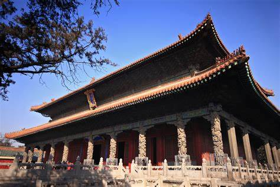
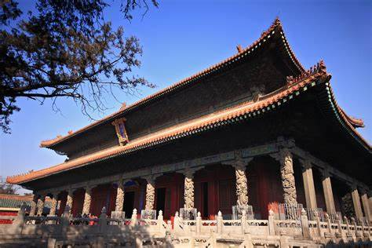

山东的历史
山东是中国历史上一个重要的地区，其历史可以追溯到远古时期。 目前发现最早的山东人——“沂源人”，可以把山东的历史上推到四五十万年以前。 新石器时代早、中期的北辛文化，距今有8000年左右。 举世闻名的原始社会末期的大汶口文化、龙山文化都是在山东首先发现的。
远古时期：山东地区已有先民活动，并出现了华夏文明的发源地之一。 夏商周时期：山东分属不同的州，是商族活动的中心区域，后被封为齐国和鲁国。 春秋战国时期：山东境内诸侯国众多，齐国成为霸主，同时儒家文化在此时期诞生。 秦汉时期：秦始皇在山东设置郡县，汉代时山东属于青州和兖州管辖，经济文化繁荣。 魏晋南北朝时期：山东地区经历战乱和分裂，经济文化发展受到影响。 隋唐宋元时期：山东经济文化繁荣，成为重要的粮食产区、商业中心和纺织业基地。 明清时期：山东经济发展达到巅峰，文化艺术也取得巨大成就，但社会矛盾凸显。 近现代时期：山东经历战争和政治动荡，经济转型，近代工业和商业兴起。
山东历史上一共经历过曲阜、临淄、青州、济南、泰安、青岛、沂水等多个省会城市。 其中，曲阜是山东最早建立的都城之一，出现于3500年前，相传当时黄帝去世后，其子选择在曲阜建立都城。 临淄和青州也是重要的都城，临淄是齐国的故城，也是齐文化的发源地；青州是古代最早的九州之一，慕容王氏在这里建立了南燕国。 此外，临沂、充州、莒县、郯城、菏泽、莱州、蓬莱、即墨等城市也曾是历史上的都城或重要城市。
近代，山东行政区划多有变动。清末，山东省有济南、东昌、泰安、兖州、沂州、曹州、登州、莱州、青州、武定10府，济宁、临清、胶州3个直隶州，共辖8个散州96个县。 中华民国初期，划分为济南、济宁、胶东、东临4道，属县107个。 1928年废道，各县直属省。 1937年10月，日军侵占山东，国民党省政府流亡。 1938年7月，中共苏鲁豫皖边区省委发出关于恢复县、区、乡政权的指示，到年底有12个县成立了抗日民主政府。 1939年7月，中共山东分局将山东划分为3个区和2个特区：胶济路南、陇海路北、津浦路东为一区，津浦路西为二区，胶东为三区，湖西、清河为特区。 1940年8月，山东省战时工作推行委员会成立，下辖16个专员公署，88个县。 1943年9月，山东省战时工作推行委员会改名为山东省行政委员会，下设5个主任公署及滨海直属专员公署，共辖18个专署和92个县级政权。
中华人民共和国成立初期，山东西部、河南北部、河北南部新成立平原省，包括今山东省菏泽、聊城等地，1952年撤销该省，将其辖区并入山东、河南。 1953年6月，滕县专区更名为济宁专区。7月，撤销湖西专区和沂水专区，将其所属县市分别划归济宁、菏泽和临沂专区。 1953年8月，徐州市、连云港市及所属各县划归江苏省。 1954年12月，撤销淄博工矿区，设立淄博市。 1958年，莱阳专区更名为烟台专区。 1960年，撤销峄县，设立枣庄市。 1963年，河南省东明县划归山东。 1964年，范县划归河南。1965年，馆陶划归河北，河北省的宁津县、庆云县划归山东。 1967年，专区更名为地区，全省共辖德州、惠民、昌潍、烟台、临沂、泰安、济宁、菏泽、聊城9个地区，济南、青岛、淄博、枣庄4个省辖市，5个县级市，107个县。 1981年5月，昌潍地区更名为潍坊地区。 1982年11月，设立省辖东营市。 1983年，撤销烟台地区、潍坊地区、济宁地区，设立地专级烟台市、潍坊市、济宁市。 1985年，撤销泰安地区，设立地专级泰安市。1987年，威海市升为地专级市。 1989年日照市升为地专级市。 1992年，惠民地区更名为滨州地区，莱芜市升为地专级市。 1994年，撤销临沂地区、德州地区，设立地专级临沂市、德州市。 1997年，撤销聊城地区，设立地专级聊城市。 2000年，撤销滨州地区、菏泽地区，设立地专级滨州市、菏泽市
 
